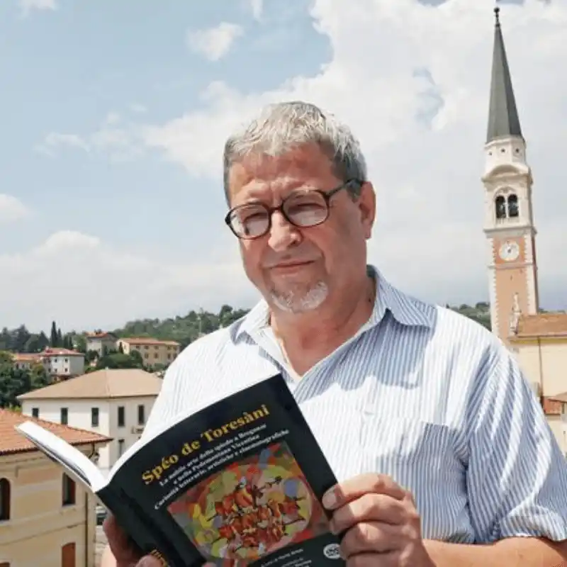

La Rassegna
Da vent’anni attraversiamo le strade della cultura senza limiti né confini.
Un’esperienza che unisce luoghi, persone e passioni in un percorso libero e aperto.

Nerio Brian
«Andrò ancora per le strade del mondo»
— New Trolls, 1968
La Rassegna Senza Orario Senza Bandiera nasce dalla visione di Nerio Brian, che per oltre vent'anni ha promosso cultura, incontro e conoscenza nella pedemontana vicentina.
Attraverso cinema, musica, teatro, cammini e momenti di dialogo, ha costruito una rete di persone, comunità e luoghi uniti dalla curiosità verso il mondo e dall'amore per il territorio.
Oggi la rassegna continua il suo percorso nel segno della sua eredità culturale, mantenendo vivo uno spirito libero, aperto e condiviso.